按鍵老化，側邊的固定條已經斷裂
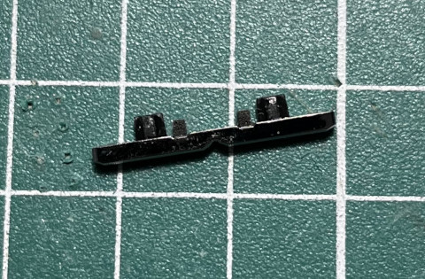
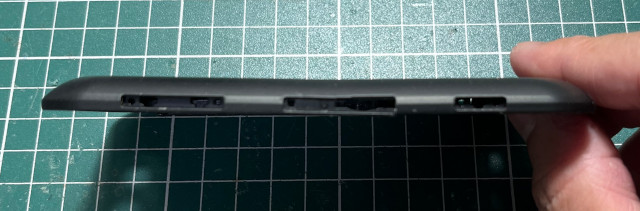
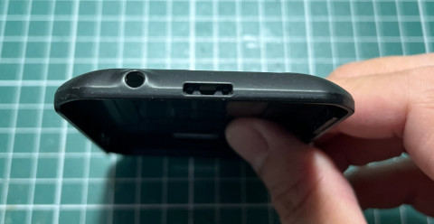
cube([70, 2, 2.2]); translate([10, 0, 0]) cube([2, 20, 1.6]); translate([21, 0, 0]) cube([2, 20, 1.6]); translate([40, 0, 0]) cube([2, 20, 1.6]); translate([60, 0, 0]) cube([2, 20, 1.6]);
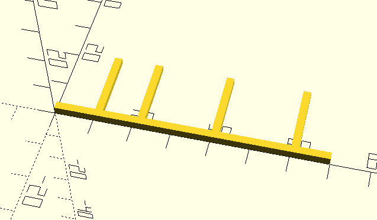
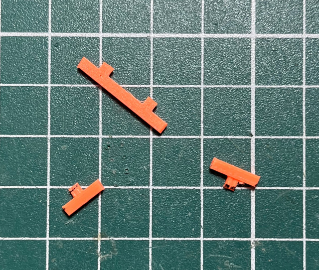
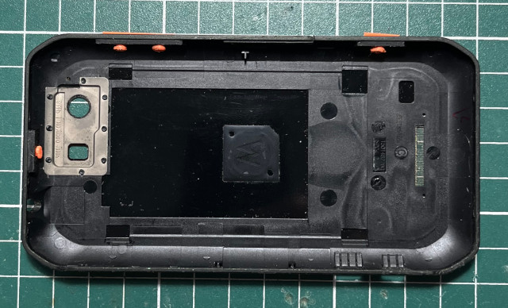
$fn = 100;
module fan() {
difference() {
translate([0, 0, 0]) resize([10, 10, 2.2]) cylinder(2.2, 5, 5);
translate([-5, -4, 0]) cube([10, 10, 2.2]);
}
}
cube([70, 1.2, 2.2]);
translate([10, 0, 0]) cube([2, 20, 1.6]);
translate([21, 0, 0]) cube([2, 20, 1.6]);
translate([40, 0, 0]) cube([2, 20, 1.6]);
translate([60, 0, 0]) cube([2, 20, 1.6]);
translate([11, 4.2, 0]) fan();
translate([22, 4.2, 0]) fan();
translate([41, 4.2, 0]) fan();
translate([61, 4.2, 0]) fan();
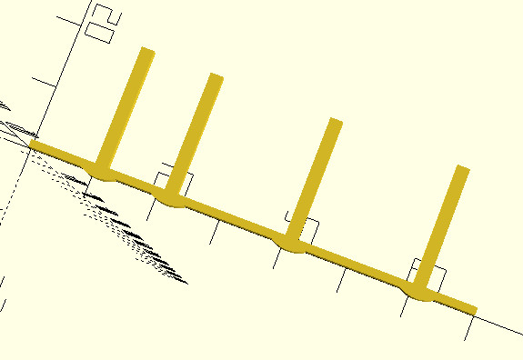
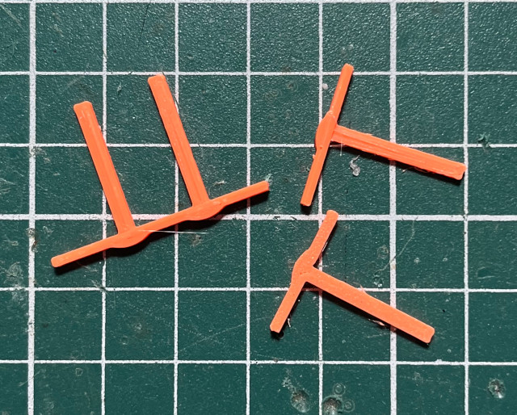
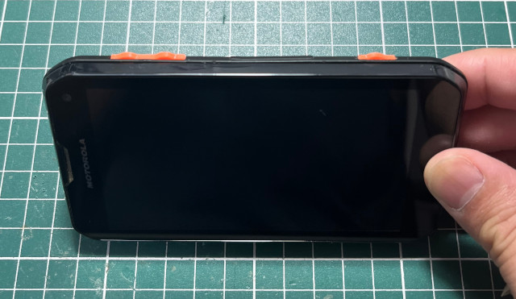
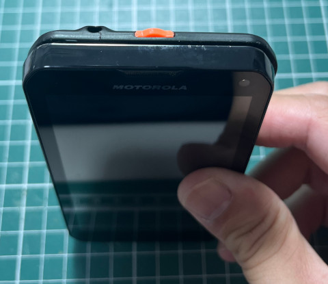
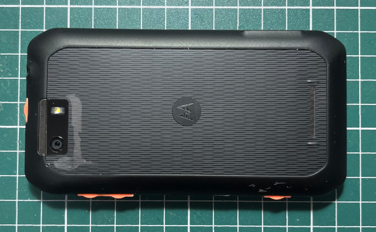